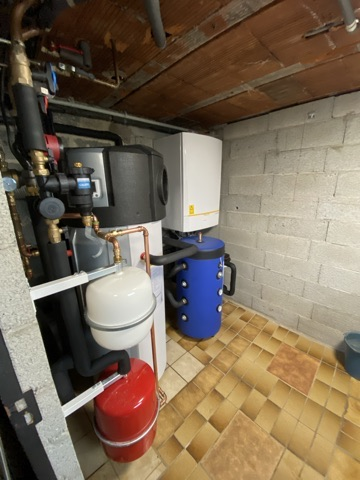
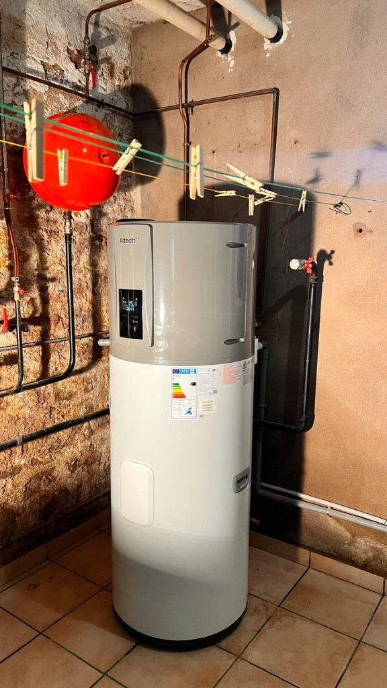
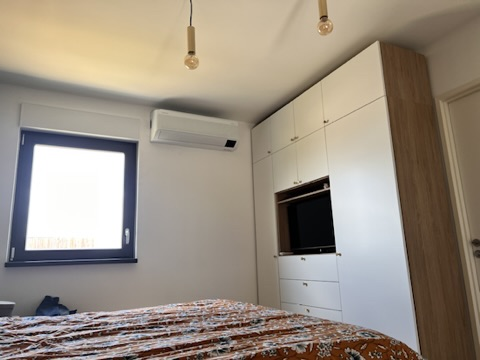
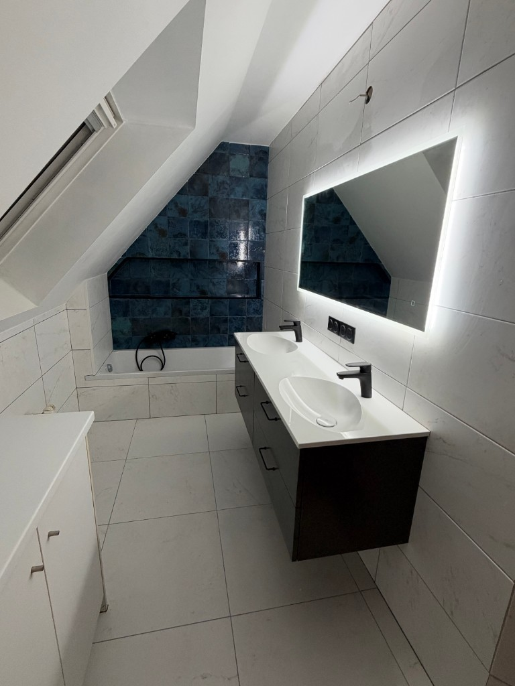

Ittenheim · Kochersberg · Strasbourg
Chez vous, on installe le confort.
Chez JC Service, nous accompagnons les particuliers et les professionnels du Bas-Rhin dans leurs projets de chauffage et de rénovation intérieure, du premier conseil à la fin des travaux.
Ce que l’on fait chez vous
De la chaleur en hiver à la fraîcheur en été, nous veillons à votre confort, qu’il s’agisse de produire votre eau chaude, de rénover votre salle de bain ou de repenser entièrement une pièce de votre maison.

Pompe à chaleur
Air/eau, remplacement fioul ou gaz, dimensionnement et mise en service.
Voir l’offre
Ballon thermodynamique
Eau chaude économe, entretien annuel, intégration dans l’existant.
Voir l’offre
Climatisation
Mono et multi-split, confort été comme hiver, pose discrète.
Voir l’offre
Salle de bain
Rénovation complète : plomberie, carrelage, électricité, finitions.
Voir l’offrePièces de vie
Repenser une pièce de la maison, du premier conseil à la fin des travaux.
Parler du projetDes chantiers qui donnent envie
Photos de poses réelles autour d’Ittenheim, pas de catalogues.
« Jérôme est très sympathique, réactif, disponible. Son travail est très soigné. Je recommande! »
Morgane Lacote · avis Google
« Jérôme nous a accompagnés du début à la fin du projet. Travail soigné, chantier propre, finitions impeccables. »
Maxime Kieffer · avis Google
Votre projet, du premier échange aux finitions
Que vous souhaitiez moderniser votre chauffage, refaire votre salle de bain ou rénover votre intérieur, vous gardez un interlocuteur qui connaît votre projet et suit vos travaux.
Rencontre
Nous venons chez vous pour découvrir les lieux et échanger sur vos envies, vos priorités et votre budget.
Conseils
Nous vous présentons les possibilités et vous aidons à choisir les équipements, les matériaux ou les finitions qui vous conviennent.
Devis
Nous détaillons les travaux et leur coût pour que vous sachiez précisément ce qui est prévu avant de vous engager.
Réalisation
Nous organisons le chantier et coordonnons, si nécessaire, les artisans de notre réseau jusqu’aux dernières finitions.
Réception et suivi
Nous faisons le tour des travaux avec vous, répondons à vos questions et restons joignables après le chantier.
Aides et reste à charge
MaPrimeRénov’, certificats d’économies d’énergie, TVA réduite : on vous dit ce qui est réaliste pour votre dossier, sans promesse magique.